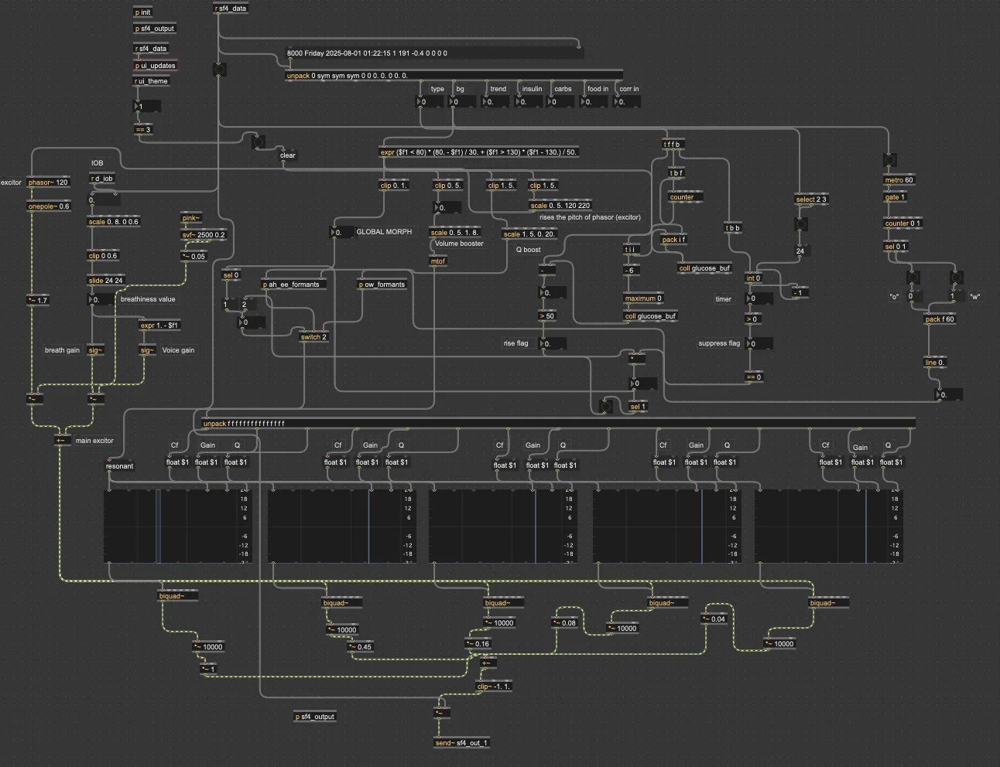

Background and Problem
Type 1 diabetes (T1D) patients using continuous glucose monitors (CGMs) and insulin pumps generate datasets, glucose readings every five minutes, insulin delivery events, carb entries, all uploaded to cloud platforms for clinical review. Every quarter, patients meet with their endocrinologist to review this data and adjust treatment.
Existing review tools from Tandem and Dexcom are exclusively visual dashboards. Certain clinical patterns can be difficult to spot in charts and tables. Additionally, sustained patient engagement with self-management data is a recognized challenge in diabetes care.
We asked, could an auditory representation of this data show patterns that visual displays underserve, and could a second sensory modality improve patient and clinician engagement with glycemic history?
Method
We built Mobi-lyze, a self-contained Max/MSP application that takes in CSV data that is exported from the Tandem Source portal and translates it into sound. The system is designed for use during the quarterly endocrinology consultation, complementing existing visual graphs.
A custom JavaScript object within Max parses the raw Tandem CSV export and reformats it for Max's Collection (coll) object. The main data streams are blood glucose (Dexcom G7 CGM, 5-minute intervals), carbohydrate entries, meal-coverage insulin, correction insulin, and timestamps. The preprocessing stage also derives more values: glycemic trend and insulin-on-board (IOB), which is modeled by a linear two-hour tapering algorithm.
Mobi-lyze has five selectable sonification themes, each foregrounding different data relationships. The four themes I did not directly build are summarized below; my primary contribution, the Vocal Tract, is described in depth in the next section.
Auditory Graph: Blood glucose maps to the carrier frequency of an FM-synthesized tone, with spectral inharmonicity increasing outside the clinically acceptable range. Insulin delivery is represented as water sounds shaped by the IOB curve. Carb entries are represented as chewing sounds. An unlogged food event detector flags glucose rises without corresponding carb entries.
Soundscape: Expresses the dataset through a natural environment: a day/night ambience cycle (birdsong vs. crickets) for temporal scaffolding, rain intensity for out-of-range glucose, thunder for low insulin, and ocean surf for insulin delivery controlled by IOB.
Wind Chimes: Designed for CGM-only / Type 2 diabetes contexts. Granular synthesis applied to wind chime recordings, with glucose mapped to event density and a resonant filter morphing timbre from wooden to metallic as glucose deviates from the target.
Days of the Week: A data-reduction theme for weekly comparison. Daily summaries are mapped to musical chords via Sethares' (1993) tonal dissonance model, so poorly managed days sound dissonant and well-managed days sound consonant.
My Primary Contribution: The Vocal Tract Theme
My Vocal Tract theme uses formant synthesis, the same mechanism that shapes vowel sounds in speech, as the representational substrate for glycemic data. The core psychoacoustic principle addressed is that humans are uniquely tuned to stress and tension in vocal sounds. We process vowel sounds faster and more categorically than almost any other sound. By using the patient's glycemic state (glucose levels) as a vowel morph, the sonification uses the perceptual channel that listeners can parse intuitively.
The theme implements three data-to-sound mappings: glucose-to-vowel morph, insulin-on-board-to-breathiness, and unlogged food event detection.

Mapping 1: Glucose to Vowel Morph
The primary mapping interpolates between two vowels, ("Ah") and ("Ee"), chosen for their maximally different first and second formant structure (F1/F2 distance), based on vowel data from Peterson and Barney (1952). When blood glucose is within the safe range (80–130 mg/dL), the synthesizer produces the open, relaxed "Ah". As glucose deviates outside that range in either direction, whether rising toward hyperglycemia or dropping toward hypoglycemia, the sound interpolates toward the tight, tense "Ee".
The mapping uses a dead-zone design as glucose values between 80–130 mg/dL all produce a morph value of 0.0 (pure "Ah"), so the clinician hears a calm, stable sound during healthy periods. Beyond that range, deviation is normalized to a 0.0–1.0 morph value that drives the interpolation.
Signal Chain
Exciter stage: A phasor~ object at 120 Hz generates a sawtooth wave as the vocal exciter, representing the pulse produced by the human vocal folds. The sawtooth is low-pass-filtered through a onepole~ to soften its spectral rolloff, which has a harmonically rich but not overly harsh source signal, which is analogous to the raw buzzy sound at the glottis before the vocal tract shapes it into a vowel.
Parallel formant filter bank: The filtered exciter signal is split and fed into five parallel filtergraph~ / biquad~ pairs, each set to bandpass mode. Each pair represents one formant (F1 through F5), with its center frequency, Q factor, and gain interpolated between the /ɑ/ and /i/ targets based on the morph value.
The formant targets for the two vowels:
| Formant | /ɑ/ "Ah" (In Range) | /i/ "Ee" (Out of Range) | ||
|---|---|---|---|---|
| Cf (Hz) | Q | Cf (Hz) | Q | |
| F1 | 730 | 8.1 | 270 | 4.5 |
| F2 | 1,090 | 9.9 | 2,290 | 25.4 |
| F3 | 2,440 | 14.4 | 3,010 | 30.1 |
| F4 | 3,300 | 13.2 | 3,300 | 27.5 |
| F5 | 3,750 | 12.5 | 3,750 | 25.0 |
Each formant's parameters are interpolated using expr objects (e.g., expr 730. + (270. - 730.) * $f1) and fed to the filtergraph~. The filtergraph~ objects serve with two purposes: they calculate biquad coefficients for the paired biquad~ filter AND provide live, visual feedback of the filter response curve, which is really useful during development and for demonstrations.
The five biquad~ outputs are scaled by per-formant gain multipliers and summed to produce the final vowel signal. A slide object smooths the morph parameter to prevent discontinuities that could cause audible clicks or filter instability during rapid glucose states.
Mapping 2: Insulin-on-Board to Breathiness
A separate mapping layer translates insulin-on-board (IOB), the quantity of insulin delivered but not yet metabolized, into vocal breathiness. When IOB is high (meaning active insulin stacking), filtered pink noise is blended into the exciter signal through a crossfade with the sawtooth, making the voice sound breathy and strained. This gives the clinician another audible cue through the insulin accumulation without changing the vowel morph.
The breathiness is capped at approximately 0.35 so that the formant character always remains audible, as the endocrinologist needs to hear where in the vowel space the patient is, even when insulin is active. Full breathiness would mask that information.
IOB was chosen over raw insulin delivery events because IOB already incorporates the natural tapering decay as insulin is metabolized. This made everything more convenient as it eliminated the need to build separate decay envelopes or track overlapping bolus events. It's a continuous float value mapped directly to the crossfade.
Mapping 3: Unlogged Food Event Detection ("Ow-Ow")
One of the most clinically significant T1D management errors is eating without logging carbohydrates or bolusing insulin. These events are difficult to flag visually because they're defined by a glucose rise with no corresponding carb entry.
I designed a detection system that analyzes the recent glucose trajectory using a ring buffer. If blood glucose rises more than 50 mg/dL within approximately 30 minutes (6 CGM readings at 5-minute intervals) and no carbohydrate entry is logged in that window, the system triggers a rapid oscillating "Ow-Ow-Ow" vocalization, a distinct formant pattern in its own sub-patch with separate vowel targets tuned to the /aʊ/ vowel.
| Formant | /a/ (Open) | /ʊ/ (Rounded) | ||
|---|---|---|---|---|
| Cf (Hz) | Q | Cf (Hz) | Q | |
| F1 | 730 | 8.1 | 300 | 6.0 |
| F2 | 1,090 | 9.9 | 870 | 8.0 |
| F3 | 2,440 | 14.4 | 2,240 | 12.0 |
| F4 | 3,300 | 13.2 | 3,300 | 13.2 |
| F5 | 3,750 | 12.5 | 3,750 | 12.5 |
To prevent false positives after properly logged meals (where glucose naturally rises post-meal), a suppression timer activates whenever a food event IS logged as a 2-hour cooldown (24 CGM readings × 5 minutes = 120 minutes, matching the insulin metabolization window) during which the alarm is suppressed.
This feature is shared across multiple Mobi-lyze themes. The Auditory Graph theme uses a distinctive echo effect for the same detection, while the Vocal Tract theme uses the "Ow" vocalization.
The Four Perceptual States
The combination of vowel morph and breathiness creates four distinct auditory signatures, each mapping to a clinically meaningful state:
| State | Vowel | Breathiness | Clinical Meaning |
|---|---|---|---|
| Relaxed + Clear | /ɑ/ "Ah" | Low | Glucose in range, low IOB - healthy baseline |
| Relaxed + Breathy | /ɑ/ "Ah" | High | Glucose in range, high IOB - insulin active, correction working |
| Tense + Breathy | /i/ "Ee" | High | Glucose out of range, high IOB - insulin stacking, system correcting |
| ⚠ Tense + Clear | /i/ "Ee" | Low | Glucose out of range, no active insulin - alarm state |
The "tense + clear" combination is the most clinically urgent and dangerous, meaning that the patient is out of range with no active insulin correction. This state is difficult to catch visually but immediately apparent auditorily.
Result
Mobi-lyze is a working, self-contained system ready for potential clinical field trials. Preliminary design findings suggest the system highlights conditions, particularly unlogged food consumption during elevated glucose, that are underrepresented in existing Tandem and Dexcom visual tools.
In March 2026, we presented Mobi-lyze twice during Northeastern CAMD's (College of Arts, Media and Design) Design Research Week. The project has also been submitted and accepted to ICAD 2026 (International Community for Auditory Display) as an extended abstract. I am a named co-author on the submission.
Future work includes developing more narrowly targeted sonification themes in collaboration with endocrinologists and conducting structured field trials to evaluate clinical utility and perceptual accessibility across diverse patient and clinician populations.
More to Come!
Currently working on:
The Texture Engine: taking a new approach, this sonification produces a continuously evolving audible texture whose perceptual qualities are defined by standard psychoacoustic sound quality metrics.